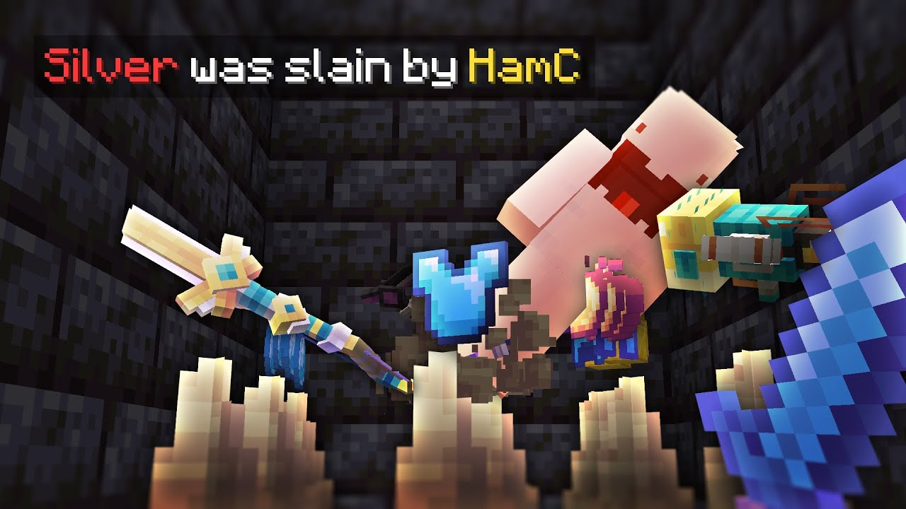
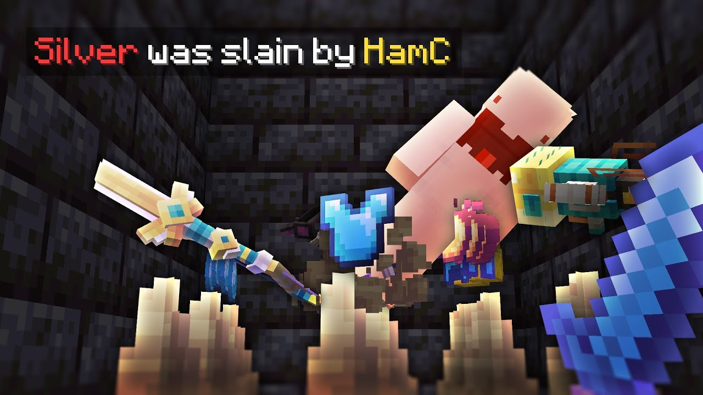
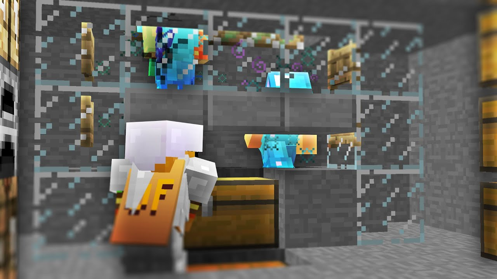
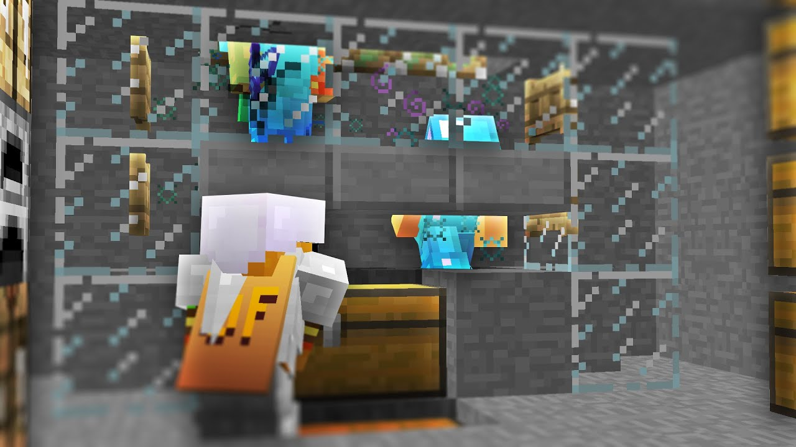
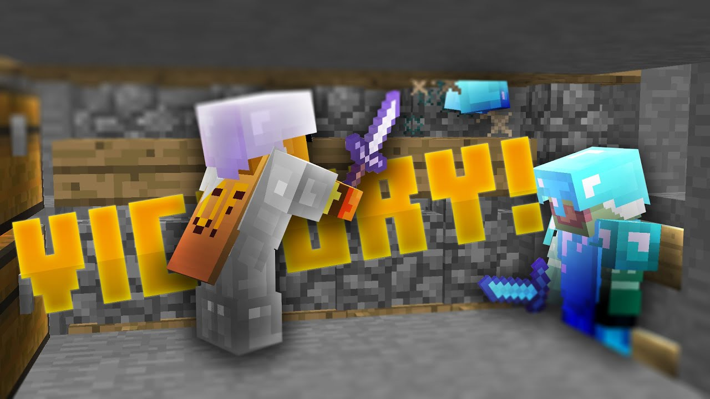
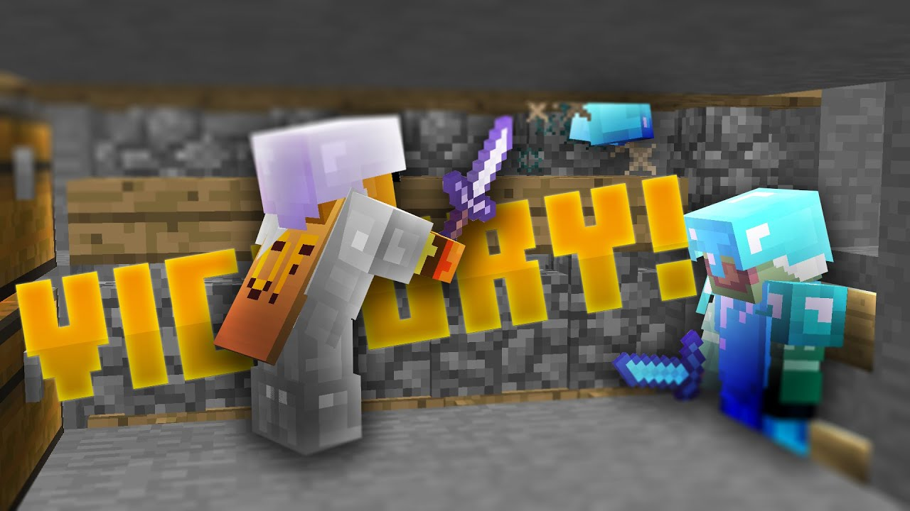

Hey, I'm Keane Lee-Shanok—though ever since I was ten years old, I've been known online as HamC. I'm a programmer at heart, but under this alias, I've also explored my passion for content creation in photo editing, 3D rendering, and video editing. These creative outlets have shaped me into the programmer I am today, and I'm excited for you to see what I've built.
This was my old thumbnail style that I used when I was around 11 years old, and it's clear evidence that everyone starts somewhere! As you can see, I was no artist. However, this era of content creation taught me a lot. I would render my models using rigs and my own lighting fixtures in Blender and it's thanks to this that I have the foundational understanding of Blender that I do now. Thankfully, this style didn't last too long...
This is where I started experimenting with making aesthetic looking text in Photoshop. Though I'd deem this style outdated for today's standards, this was pretty effective and I was getting my first couple thousands of views on my videos!
I'd regained my interest in making Minecraft styled thumbnails for my videos, but there was just something... missing. At this time I was taking in game screenshots of my character and then adding effects in Photoshop, but something was off. I hadn't found my style just yet. However, as time went on, this was soon to change...

I did it, I found my modern style! Of course I'm always open to learning more and making my thumbnails even better, but this general style has stuck with me for quite some time, and has certainly performed the best on Youtube. I render 3D images of Minecraft gameplay with Replaymod via Fabric and upscale them through FFmpeg for the most optimal Youtube thumbnail quality. Then I apply a series of blending effects in Photoshop and make any further adjustments in Paint.NET. I can confidently say that nowadays, it isn't just simple screenshots anymore!
Now that you know my story, explore my work...
 


 



 
